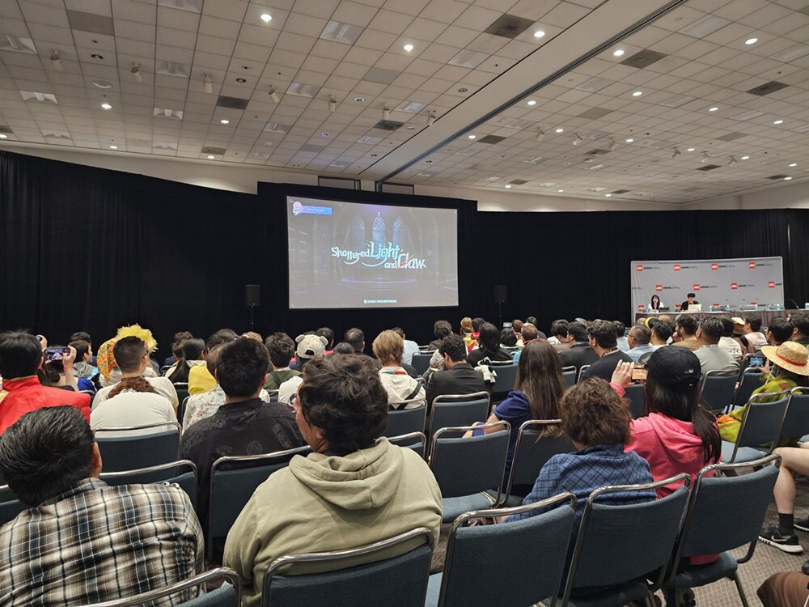

카오스 제로 나이트메어 시즌4 '부서진 빛과 발톱' 예고, 힐데ㆍ아라벨라ㆍ올가 신규 전투원과 외출복까지
안녕하세요. 영원한도시입니다. 최근 테네브리아 공략을 올렸었는데, 이번엔 같은 게임 시즌4 예고 소식으로 다시 찾아왔네요.
오늘이 7월 27일이니까 정식 업데이트까지 이틀 남았는데요. 지금까지 공식적으로 공개된 내용을 정리해서 알려드리려고 합니다.
1. 시즌4 '부서진 빛과 발톱', 언제 뭐가 오나
카오스 제로 나이트메어는 슈퍼크리에이티브가 개발하고 스마일게이트 메가포트가 서비스하는 덱빌딩 로그라이크 RPG인데요, 이번에 나오는 시즌4 '부서진 빛과 발톱'은 2026년 7월 29일에 정식 적용됩니다.
이 소식이 처음 공개된 건 7월 3일(현지시간) 저녁, 미국 LA에서 열린 '2026 애니메 엑스포' 개발자 패널 세션이었습니다. 국내에는 7월 4일 저녁부터 소식이 전해졌고요, 이후 7월 17일에는 게임 공식 X(트위터) 계정에서 첫 픽업 캐릭터 '힐데'를 따로 예고하면서 '29일 출시 예정인 캐릭터'라고 소개했습니다.
이번 발표에서는 카오스 제로 나이트메어의 김형석 PD님이 직접 나와 개발 철학을 공유하고, 앞으로 게임 완성도를 계속 강화해 나가겠다는 방향도 이야기했습니다.

위 사진을 보시면 아시겠지만 무대보다 객석 뒷모습이 화면 대부분을 차지하는 구도인데, 뒤쪽 자리에서 찍은 사진인데도 스크린에 걸린 시즌4 타이틀만큼은 또렷하게 보이더라고요.
애니메 엑스포 패널 현장이에요. 무대 스크린에 시즌4 타이틀 'Shattered Light and Claw'가 떠 있는 게 보이시더라고요.
이미지 출처: 인벤 웹진 (ⓒ슈퍼크리에이티브·스마일게이트 메가포트)
2. 시즌4 스토리는 뭘 다루나 - '은하계 재해'
시즌4 스토리는 '은하계 재해'를 소재로 삼는데, 이번 시즌은 '신 번뜩임'이 대체 뭔지, 우주의 신들이 왜 얽혀 있는지를 본격적으로 파고든다고 해요.
바로 앞 시즌3가 아델하이트 편으로 마무리되고, 시즌3 종료와 함께 3주 간의 프리 시즌이 진행된다고 알려진 걸 감안하면, 이번 시즌4는 그 뒤를 잇는 새 국면이 되는 셈이거든요.
게임 공식 X에는 연쇄 실종 사건의 진실이 무엇인지 궁금증을 자극하는 미스터리풍 티저 문구도 함께 올라왔다고 하더라고요. 자세한 줄거리는 본편이 열려야 확인될 것 같습니다.
이번 시즌엔 스토리와 함께 신규 시스템 '욕망 카드'도 같이 소개됐습니다. 경향게임스 보도에 따르면 이 카드 시스템은 '소유ㆍ탐구ㆍ통제ㆍ생존' 네 가지 키워드를 기반으로 합니다.
3. 신규 전투원 3인 - 힐데ㆍ아라벨라ㆍ올가
이번 시즌엔 힐데, 아라벨라, 올가 세 명의 신규 전투원이 합류합니다.
- '힐데' - '아이언 레인' 소속, '폭스 소대' 소대장입니다. 이번 시즌 세 차례 예정된 픽업 캐릭터 중 첫 번째로 예고됐습니다.
- '아라벨라' - 용병단 '블랙 스피카'의 단장이라고 하네요. 이름부터 카리스마 있죠.
- '올가' - 강철을 자유자재로 다루는 능력을 지녔고, 시즌4 핵심 설정인 '신 번뜩임'ㆍ우주의 신 이야기에서 중요한 인물로 등장한다고 해요.
세 캐릭터 모두 "기존 전투원들과는 다른 고유한 매력"으로 소개됐는데요, 다만 성능(스탯이나 강캐 여부)은 아직 공식적으로 확인되지 않았습니다.
| 전투원 | 무기 | 속성 | 역할 |
|---|---|---|---|
| 힐데 | 거대한 활 | 본능 | 레인저 |
| 아라벨라 | 사복검 | 미공개 | 미공개 |
| 올가 | 거대한 낫 | 미공개 | 미공개 |
화려한 활 연출이 예고됐다고 하니, 이런 느낌일까요.
아라벨라ㆍ올가 관련 예고 이미지예요(개별 공개될 수 있어요).
4. 신규 시스템 '외출복' - 신규 전투원 것이 아니라는 점 주의
이번에 함께 공개된 '외출복' 시스템은 힐데ㆍ아라벨라ㆍ올가 신규 전투원의 것이 아닙니다. 기존에 있던 전투원들의 새 외출복이에요. 헷갈릴 수 있는 부분이라 먼저 짚고 갈게요.
'외출복'은 전투원의 외형을 바꾸는 스킨 시스템인데, 단순히 겉모습만 바뀌는 게 아니라 전용 보이스와 전용 스토리까지 딸려 있고, 방주도시(게임 내 로비)에서도 바뀐 모습이 그대로 적용된다고 해요.
이번에 같이 공개된 외출복은 이렇습니다.
- '하이데마리' - 해변 카페에서 아르바이트하는 모습의 메이드 콘셉트.
- '세레니엘' - 수영복 콘셉트.
- '티페라'ㆍ'리타' - 시즌2 스토리에서만 잠깐 등장했던 변장 의상.
올여름 하이데마리ㆍ세레니엘의 외출복을 시작으로, 앞으로 다양한 전투원들의 외형 콘텐츠(외출복)를 순차적으로 계속 선보일 계획이라고 합니다.
신규 전투원 3인의 외출복은 "준비 중"이라는 언급만 있고, 구체적인 시기는 아직 확인되지 않았습니다. 나오는 대로 다시 정리해서 알려드릴게요.
해변 카페 아르바이트 콘셉트로 나온다는 하이데마리 외출복이에요.
자주 묻는 질문
Q. 신규 전투원 3명은 언제부터 뽑을 수 있나요?
힐데는 7월 29일 시즌4 적용과 함께 첫 픽업으로 나옵니다. 아라벨라ㆍ올가는 총 세 차례 픽업 중 나머지 두 자리로 예고됐고, 개별 픽업 일정은 아직 나오지 않았습니다.
Q. 욕망 카드도 시즌4와 함께 처음 등장하는 완전히 새로운 시스템인가요?
네, 이번 시즌4에서 처음 소개된 신규 시스템입니다.
▶ 같이 보면 좋은 글
· 카오스 제로 나이트메어 테네브리아 공략 (링크는 네이버에서 직접 연결)
· 카오스 제로 나이트메어 디아나 세팅 공략 (링크는 네이버에서 직접 연결)
· 카오스 제로 나이트메어 신규 캐릭터 페이 정리 (링크는 네이버에서 직접 연결)
참고한 곳
· 베타뉴스 - 애니메 엑스포 시즌4 공개 보도
· 경향게임스 - 시즌4 신규 전투원ㆍ욕망 카드 보도
· 게임톡 - 시즌4 외출복ㆍ스토리 테마 보도
· 인벤 - 시즌4 신규 전투원 웹진 기사